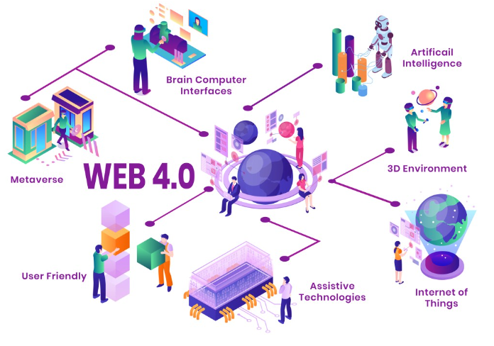

<!DOCTYPE html>
<html lang="en"></html>
<head>
    <meta charset="UTF-8">
    <meta name="viewport" content="width=device-width, initial-scale=1.0">
    <nav>
        <a href="index.html">Home</a>&#65372;
        <a href="www.html">World Wide Web</a>&#65372;
        <a href="tcpip.html">TCP/IP</a>&#65372;
        <a href="http.html">HTTP</a>&#65372;
        <a href="dns.html">DNS</a>&#65372;
        <a href="html.html">HTML</a>&#65372;
        <a href="webserver.html">Web Server</a>&#65372;
        <a href="webbrowser.html">Web Browser</a>&#65372;
        <a href="url.html">Uniform Resource Locator</a>&#65372;
        <a href="intranet.html">Intranet</a>&#65372;
        <a href="extranet.html">Extranet</a>&#65372;
        <a href="ftp.html">File Transfer Protocol</a>&#65372;
        <a href="web1.0.html">Web 1.0</a>&#65372;
        <a href="web2.0.html">Web 2.0</a>&#65372;
        <a href="web3.0.html">Web 3.0</a>&#65372;
        <a href="web4.0.html">Web 4.0</a>&#65372;

    </nav>
    <title> Web 4.0</title>
     <style>
    body {
            
            background-color: #fff5f7;
            margin: 0;
            padding: 20px;
        }
        h1{
            color: #c2185b;
            font-size: 30px;
            text-transform: uppercase;
        }
        h2{
            color: #f48fb1;
            font-size: 22px;
            text-transform: uppercase;
            text-decoration: underline;

        }
        p{
            color: #333;
            font-size: 18px;
            line-height: 1.6;
            background-color: beige;
            font-style: italic;
            padding: 10px;
        }
        ul{
            color: #333;
            font-size: 18px;
            line-height: 1.6;
            font-style: italic;
            padding: 10px;
        }
</style>
</head>
<body>  
    <h2>Definition</h2>
    <p>
        Web 4.0, also known as the "Symbiotic Web," is a concept that envisions a future stage of the World Wide Web where humans and machines interact in a more seamless and integrated manner. It is characterized by the use of advanced technologies such as artificial intelligence, machine learning, and natural language processing to create a more personalized and intuitive web experience. Web 4.0 aims to enable a deeper level of interaction between users and the web, allowing for more intelligent and context-aware applications that can understand and respond to user needs in real-time.
    </p>
    <p>
        The concept of Web 4.0 is still largely theoretical and speculative, as it represents a vision for the future of the web rather than a specific set of technologies or standards. However, it is expected to build upon the advancements of Web 3.0 and further enhance the capabilities of the web to create a more immersive and intelligent online experience.   
    </p>
    <h2>Key Features of Web 4.0</h2>
    <ul>
        <li><strong>Symbiotic Interaction:</strong> Web 4.0 envisions a symbiotic relationship between humans and machines, where both can learn from each other and work together to create a more personalized and intuitive web experience.</li>
        <li><strong>Advanced AI Integration:</strong> Web 4.0 is expected to leverage advanced artificial intelligence technologies to enable more intelligent and context-aware applications that can understand and respond to user needs in real-time.</li>
        <li><strong>Enhanced Personalization:</strong> Web 4.0 aims to provide a highly personalized web experience by using AI to analyze user behavior and preferences, allowing for more relevant content and services.</li>
        <li><strong>Seamless Connectivity:</strong> Web 4.0 is expected to further enhance connectivity between devices and platforms, enabling a more seamless and integrated web experience across different technologies and ecosystems.</li>
    </ul>
    
    <h2>Key Characteristics</h2>
    <p>
        Web 4.0 is expected to have several key characteristics that differentiate it from previous iterations of the web. These include:
        <ul>
            <li><strong>Intelligent Agents:</strong> Web 4.0 may feature intelligent agents that can assist users in navigating the web, providing personalized recommendations, and automating tasks.</li>
            <li><strong>Context-Aware Computing:</strong> Web 4.0 applications may be able to understand the context of user interactions and provide more relevant and timely responses based on that context.</li>
            <li><strong>Enhanced User Experience:</strong> Web 4.0 aims to create a more immersive and engaging user experience through the use of advanced technologies such as virtual reality, augmented reality, and haptic feedback.</li>
            <li><strong>Greater Interoperability:</strong> Web 4.0 is expected to further enhance interoperability between different platforms and technologies, allowing for a more seamless and integrated web experience.</li>
        </ul>
    </p>
    <h2>Potential Impact of Web 4.0</h2>
    <p>
        The potential impact of Web 4.0 is significant, as it has the potential to revolutionize the way we interact with the web and with technology in general. It could lead to new applications and services that are more personalized, intelligent, and responsive to user needs. However, it also raises important questions about privacy, security, and the ethical implications of advanced AI technologies. As Web 4.0 continues to evolve, it will be important to carefully consider these issues and ensure that the benefits of this new era of the web are accessible to all users while maintaining privacy and security.
    </p>
    <h2>How to Use Web 4.0 for Multiple Purposes</h2>
    <p>
        Web 4.0 has the potential to be used for a wide range of purposes, including:
        <ul>
            <li><strong>Personalized Content Delivery:</strong> Web 4.0 can provide users with highly personalized content and services based on their preferences and behavior.</li>
            <li><strong>Intelligent Virtual Assistants:</strong> Web 4.0 may feature intelligent virtual assistants that can help users with tasks such as scheduling, information retrieval, and online shopping.</li>
            <li><strong>Enhanced E-commerce Experiences:</strong> Web 4.0 could revolutionize e-commerce by providing more personalized shopping experiences and enabling new forms of online interaction between buyers and sellers.</li>
            <li><strong>Improved Healthcare Services:</strong> Web 4.0 could enable more personalized and efficient healthcare services through the use of AI and data analytics to better understand patient needs and provide tailored treatments.</li>
        </ul>
    </p>
    <h2>Challenges of Web 4.0</h2>
    <p>
        Despite its potential benefits, Web 4.0 also faces several challenges, including:
        <ul>
            <li><strong>Privacy Concerns:</strong> The increased use of AI and data analytics in Web 4.0 raises concerns about user privacy and the potential for misuse of personal data.</li>
            <li><strong>Security Risks:</strong> The integration of advanced technologies in Web 4.0 may create new security vulnerabilities that need to be addressed to protect users from cyber threats.</li>
            <li><strong>Ethical Implications:</strong> The development and deployment of advanced AI technologies in Web 4.0 raise important ethical questions about the impact on society and the potential for bias in algorithms.</li>
            <li><strong>Digital Divide:</strong> There is a risk that the benefits of Web 4.0 may not be accessible to everyone, particularly those in underserved communities or with limited access to technology.</li>
        </ul>
    </p>
    <h2>Future of Web 4.0</h2>
    <p>
        The future of Web 4.0 is promising, with ongoing advancements in AI, machine learning, and other technologies that will continue to shape the web experience. As more organizations and developers adopt Web 4.0 technologies, we can expect to see new applications and services that are more personalized, intelligent, and interconnected. However, it will be important to address the challenges associated with Web 4.0 to ensure that its benefits are accessible to all users while maintaining privacy and security.
    </p>
</body>
</html>